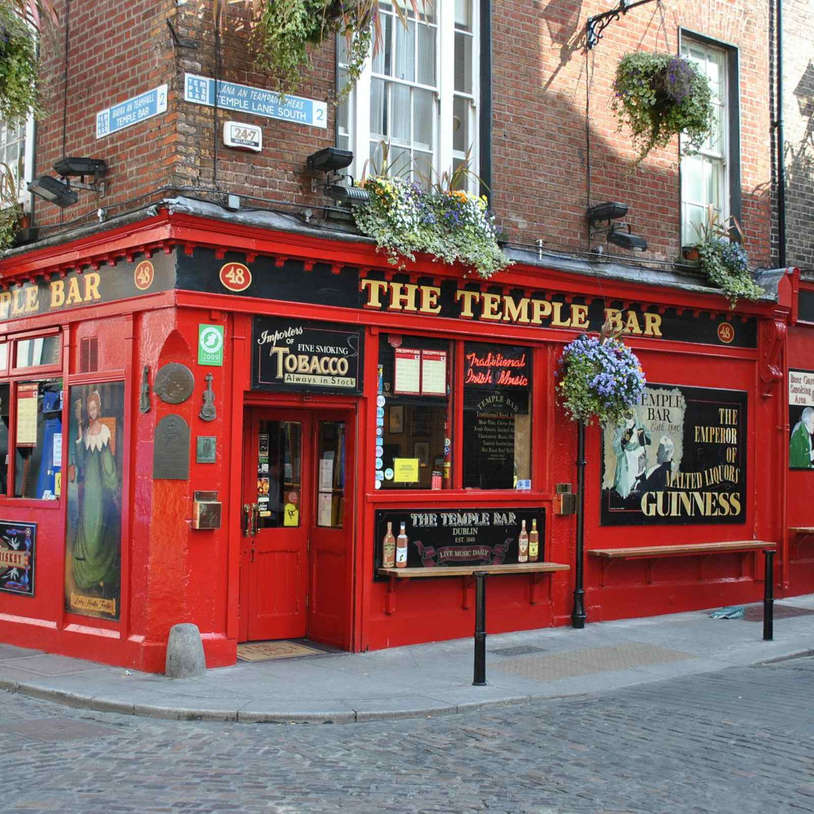
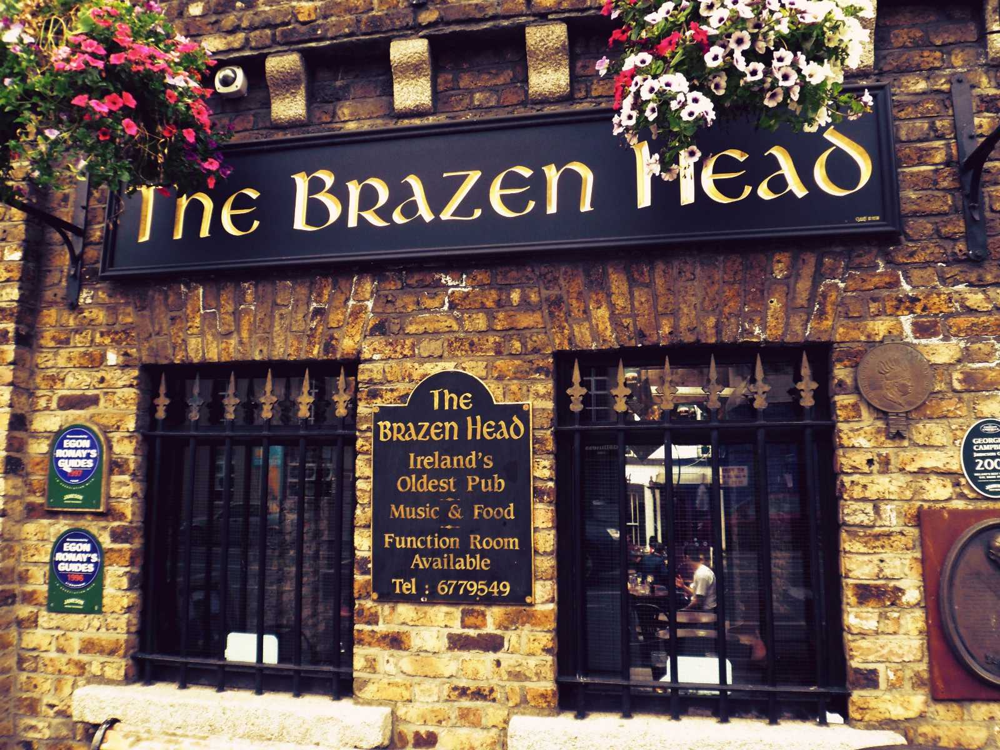
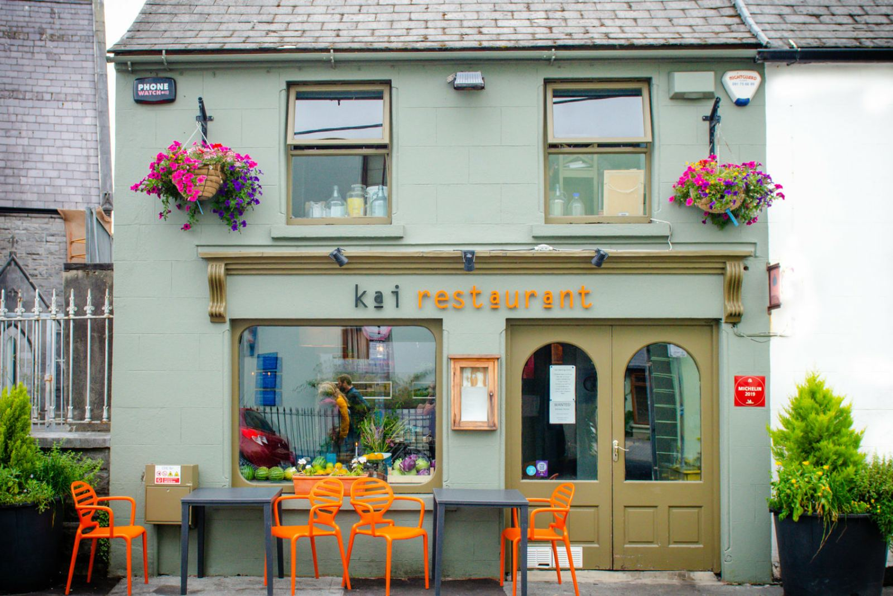
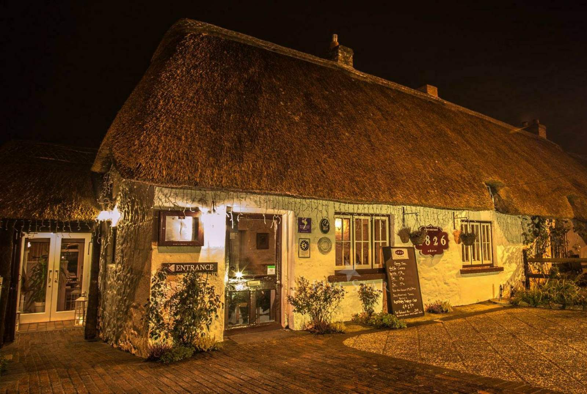
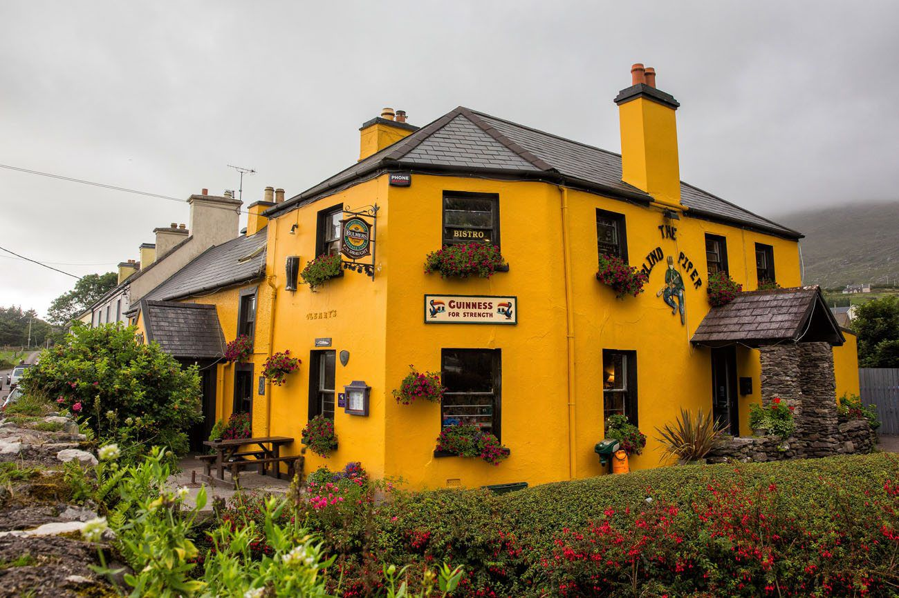

Temple Bar
Ще один всесвітньо відомий гастропаб у Дубліні. Розташовується заклад у самому центрі міста, тому він є чудовим вибором для відвідувачів, що блукають Дубліном. Хоча, Temple Bar давно і сам став туристичним об'єктом. Детальніше

Brazen Head
Найстаріший і, напевно, найвідоміший гастропаб у самому серці Дубліна. Надзвичайно колоритний і атмосферний заклад харчування, у якому можна не лише смачно поїсти, але і проникнутися життям ірландців. Детальніше

Kai Restaurant
Ресторан, що знаходиться у місті Голвей, в історичному районі. У закладу є невелика історія: раніше він слугував будинком для відомого флориста. Особливість ресторану полягає у його меню: використовуються лише органічні продукти місцевого виробництва. Детальніше

1826 Adare
Ресторан у місті Лімерік, що спеціалізується на місцевій кухні із додаванням сучасних елементів. Кухарі закладу мають велику практику закордоном, тому 1826 Adare вважається одним з найкращих ресторанів міста. Детальніше

Blind Piper Pub
Один з найбільш відвідуваних пабів Ірландії, а саме тому, що він розташовується на маршруті "Кільце Керрі" ( найвідоміший туристичний маршрут країни). Окрім звичних для пабу закусок і напоїв, Blind Piper пропонує традиційні для ірландської кухні страви і десерти. Детальніше
